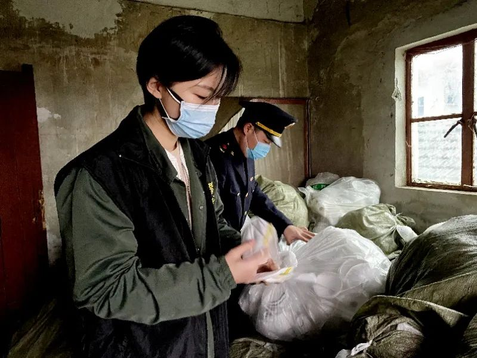
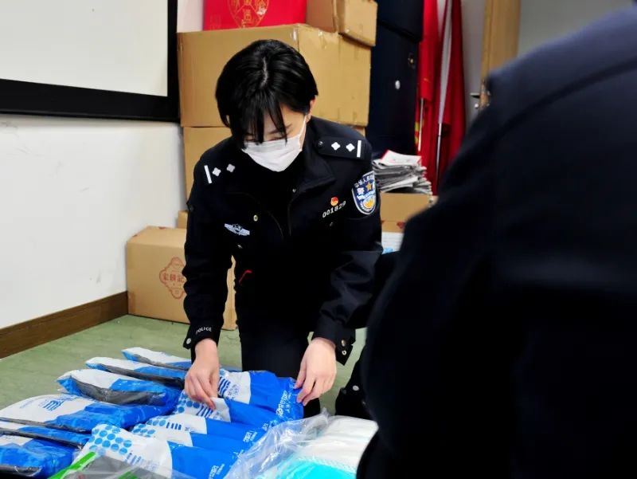

不好意思，突然接到抓捕任务，才回来
原文链接 备份链接 原本约好的采访时间，民警高达爽约了。 四个半小时后，他才回复我：“不好意思，突然接到抓捕任务，才回来。” 高达要抓捕的是他所在辖区内一名因斗殴致人轻伤的“潜逃”青年。辖区地处云贵边境的山村，处理年轻人打架斗殴案件并不鲜 …
澎湃新闻记者 朱奕奕
“你敢不敢戴着你做的口罩出门？敢不敢？”这是上海经侦90后民警高境向制假犯罪嫌疑人，发出的有力质问。
大年初三，独自在家的经侦总队食药环侦支队民警高境突然接到单位一通电话。电话那头，支队领导告诉她，郊区发生一起制售假口罩的案件，需要派侦查员去现场办案。本就闲不住的她爽快地表示自己有时间，能出现场。
从那通电话开始至今，高境在打击涉疫犯罪一线的工作就没有停过。

经侦民警高境。本文图片 上海警方供图
很多个白天黑夜，高境都是在超市、药店、社区、写字楼，或是一个个偏僻的郊区厂房中度过的，她开玩笑说，自己是“疫情期间到处流窜的人”。
让高境印象最为深刻的，是自己参与侦办的一起特大生产、销售假劣口罩案件。高境记得那天是情人节，当时已临近下班，她突然接到电话，在松江区一民房内发现一个制假窝点。
警车鸣笛，高境和探组的同事们挂断电话后便上路了。“到了现场后，我们看到的是一栋外观并不起眼的二层农宅，但是走进里屋，我完全震惊了。”几只私拉电线接上的灯泡时好时坏地闪跳着，所谓的口罩压模具和换气阀被蛛网厚厚地蒙盖着，几十个装有成品口罩的蛇皮袋随意地堆砌在阁楼，而捆扎袋口的就是那些脱线的口罩耳带，所有进出过的民警和市场监管人员，衣服上都沾染着拍不去的白色粉尘。

眼前这副“脏乱差”的场景，怎么能生产制作口罩呢？而犯罪嫌疑人对此还不以为然地表示“反正防护功能都差不多”。高境在现场就质问他，“你敢不敢戴着你做的口罩出门？敢不敢？”方才还振振有词的嫌疑人瞬间沉默不语。最终，她和同事一举捣毁这一窝点，现场缴获假冒品牌口罩10余万枚，以及大量制假原材料和制假工具。

逆行在疫情第一线，高境不是没有怕过，她也曾经在将嫌疑人送医检查的过程中，当得知对方处于高烧状态时心头一紧。但更多的时候，这个一头短发、干净利索的90后女孩身上没有年龄和性别的标签，她和无数“经侦人”一样，无所畏惧地战斗在打击经济犯罪的前沿。
本期编辑 周玉华
推荐阅读


原文链接 备份链接 原本约好的采访时间，民警高达爽约了。 四个半小时后，他才回复我：“不好意思，突然接到抓捕任务，才回来。” 高达要抓捕的是他所在辖区内一名因斗殴致人轻伤的“潜逃”青年。辖区地处云贵边境的山村，处理年轻人打架斗殴案件并不鲜 …
原文链接 备份链接 澎湃新闻记者 谭君 通讯员 杨昭 郭炫泽 澎湃新闻（www.thepaper.cn）2月19日从湖南省公安厅获悉，湖南公安机关破获多起销售口罩引发的刑事案件。其中两起案件中，犯罪嫌疑人从湖北仙桃市购买了两百余万只劳保口 …
原文链接 备份链接 伊朗卫生部7日公布，截至当地时间7日上午，伊朗新增新冠肺炎确诊病例1076例，累计病例数升至5823例，其中死亡145例，治愈1669例。 地处欧亚大陆“十字路口”的伊朗，向外扩散的风险日渐增加。 实习记者｜ 戴敏洁 …
原文链接 备份链接 今天是国际妇女节。疫情爆发一个多月，战疫一线的女医生、女护士度过了怎样的时光？ 穿上防护服，她们是义无反顾的战士，是这个社会的铠甲。脱下防护服，她们也只是普通的母亲、妻子和女儿，她们会害怕自己感染后不能康复；会想断奶 …
原文链接 备份链接 澎湃新闻记者 南博一 随着新冠病毒开始在欧洲蔓延，口罩等防护物资成为了稀缺之物。一些国家开始禁止对外出口防护物资，一些国家的原材料渠道被因此切断，各国之间矛盾频发。 据《新苏黎世报周日版》( NZZ am …